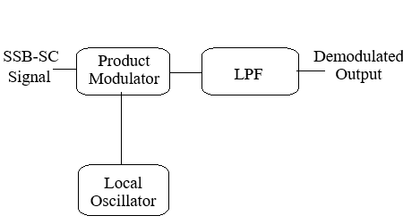

Instructions for Single Sideband Suppressed Carrier (SSB-SC) Modulation
- Step 1: Click on 'Generate Message' button to generate input message signal
- Step 2: Then click on 'Generate Carrier' button to generate carrier signal. The carrier frequency has to be more than the message frequency and You can change frequencies using sliders
- Step 3: Click on 'Generate Upper SSB-SC Signal' button to generate Generate Upper Sideband SSB-SC Signal
- Step 4: Click on 'Generate Lower SSB-SC Signal' to generate Generate Lower Sideband SSB-SC Signal
- Step 5: Click the 'Show Frequency Spectrums' button to view the SSB-SC spectra.

Step 1:
100Hz
Step 2:
Message Signal Gain
1
Step 3:
Step 4:
Step 5:
Instructions for SSBSC Demodulation
- Step 1: Click on 'Generate Recovered Message Signal(from USB SSB-SC)' button to generate message signal from Upper Sideband SSB-SC Signal
- Step 2: Click on 'Generate Recovered Message Signal(from LSB SSB-SC)' button to generate message signal from lower Sideband SSB-SC Signal
- Step 3: Click on the 'Show Frequency Spectrums' button above to see spectra of the message, modulated, and demodulated signals

Cut-off Frequency (Hz)